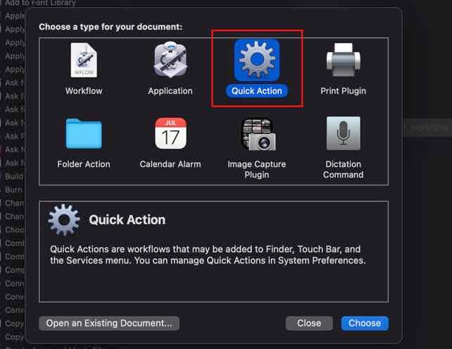
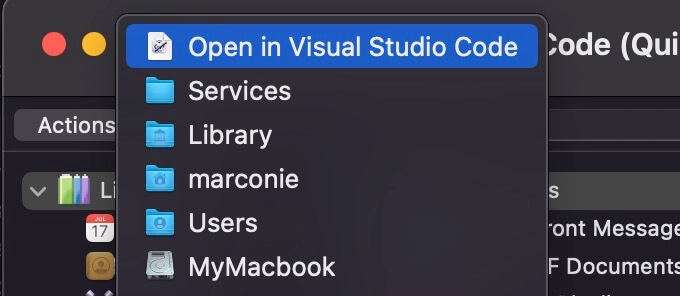
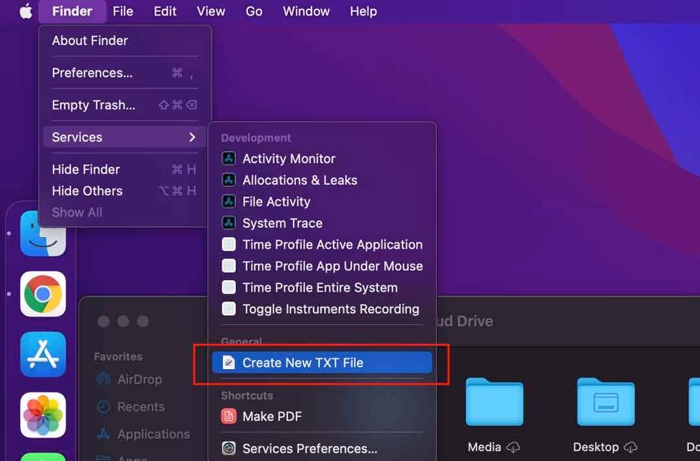

macOS 中的右键菜单没有像 windows 那样多样的选项，我最常用的是：用 vs code 打开文件夹，新建文本文件等。
目前有第三方的软件可以添加这些功能，比如 irightmouse，但基本都是收费软件，下面介绍如何通过系统自带的 automator 来添加我们需要的功能。
vs code 菜单
首先我们创建一个 Open in Visual Studio Code 的 action。
打开 Automator，点击 file - new 创建一个 quick action：

首先修改右边的参数，workflow receives current files or folders in finder，下面的 image 根据个人喜好修改：
然后左侧搜索 run shell script 双击添加到右侧，修改 pass input：as arguments，然后脚本内容如下：
for f in "[email protected]"
do
open -a 'Visual Studio Code' "$f"
done
保存脚本即可，命名为 Open in Visual Studio Code，需要保存到当前用户目录下的 library/services 目录下(默认就会保存到这个目录)：

然后在 finder 中测试，选中一个文件夹查看右键菜单，在 quick action 中会出现 Open in Visual Studio Code：
点击后即可在 vs code 中打开文件或文件夹。
copy path 菜单
下面我们用同样的方法做一个复制文件或文件夹路径的 action。
新建一个 quick action，修改右边的参数，workflow receives current files or folders in finder。然后添加一个 copy to clipboard 的 variable 即可：
命名为 Copy Path 并保存即可。
此时 finder 中 quick action 菜单中就会有了对应的选项：
create new txt file 菜单
macOS 中没有右键创建新文件的选项，想要在当前目录中创建一个新文件挺麻烦的，下面我们通过类似的方法来创建一个快捷选项。
新建一个 quick action，这里 receives 选择 no input：
然后搜索并添加一个 Run AppleScript 变量，修改脚本内容如下：
set file_name to "untitled"
set file_ext to ".txt"
set is_desktop to false
-- get folder path and if we are in desktop (no folder opened)
try
tell application "Finder"
set this_folder to (folder of the front Finder window) as alias
end tell
on error
-- no open folder windows
set this_folder to path to desktop folder as alias
set is_desktop to true
end try
-- get the new file name (do not override an already existing file)
tell application "System Events"
set file_list to get the name of every disk item of this_folder
end tell
set new_file to file_name & file_ext
set x to 1
repeat
if new_file is in file_list then
set new_file to file_name & " " & x & file_ext
set x to x + 1
else
exit repeat
end if
end repeat
-- create and select the new file
tell application "Finder"
activate
set the_file to make new file at folder this_folder with properties {name:new_file}
if is_desktop is false then
reveal the_file
else
select window of desktop
set selection to the_file
delay 0.1
end if
end tell
-- press enter (rename)
tell application "System Events"
tell process "Finder"
keystroke return
end tell
end tell脚本中，定义了新建文件的文件名和扩展名，如果修改其他名称可以自行修改。
完成后保存即可，名称为 Create New TXT File。
保存后在 finder 中我们在任意位置右键会发现没有 quick action 选项，这是因为这个 action 定义中并没有选择输入源，因为新建文件和当前的文件并没有什么关系。
此时需要通过左上角的 finder - services 找到我们刚创建的 action：

也可以给这个 action 定义快捷键，在 keyboard - shrotcuts - services 中找到这个 action 在后边添加 shortcut 即可：
注意第一次运行这个 action 会提示需要授权 finder 的几个权限，根据提示打开即可。
参考链接
Create a new (.txt) File in Finder - Keyboard Shortcut
OSX: how to add a right click option to a folder which opens the folder with an app like VS Code?
没有评论